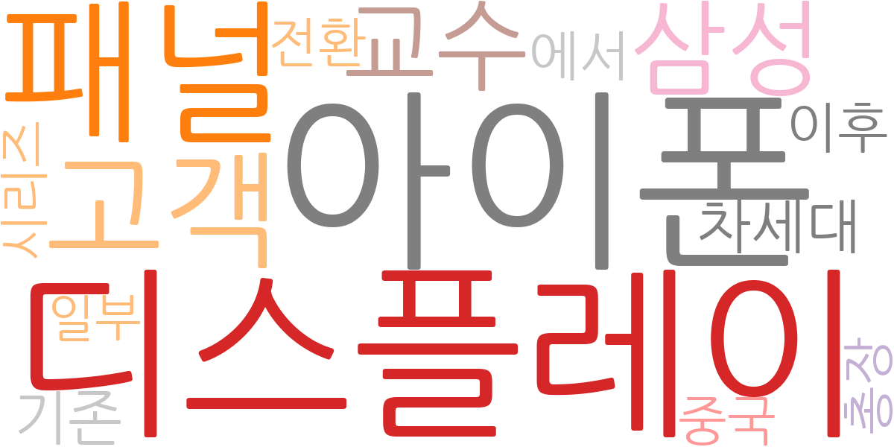
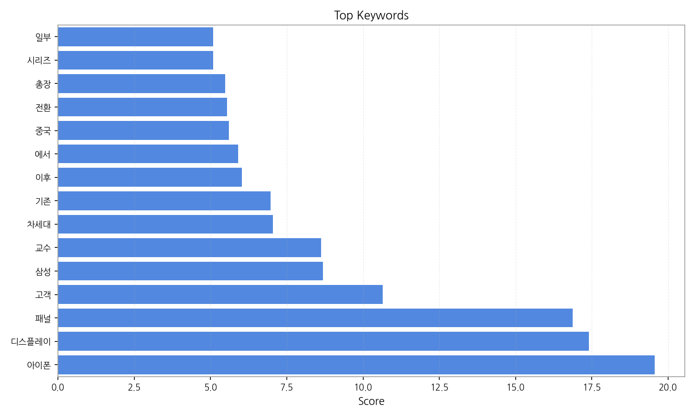
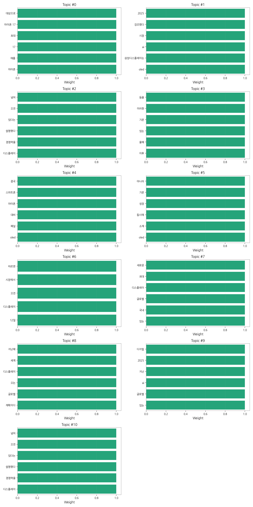

이번 기간 핵심 토픽과 키워드, 주요 시사점을 요약합니다.
핵심 맥락: 제공된 데이터는 2025년 9월 초중순 한국 뉴스에서 OLED 디스플레이 시장, 특히 아이폰 17의 디스플레이와 관련된 기사가 급증했음을 보여줍니다. 삼성디스플레이를 비롯한 국내 업체들의 OLED 기술 경쟁력과 시장 점유율 확보를 위한 노력, 그리고 글로벌 시장 동향에 대한 보도가 주를 이룹니다. 여기에는 아이폰 17의 새로운 디스플레이 사양과 관련된 기대감과 함께, OLED 시장의 성장 및 AI 기술과의 접목에 대한 전망도 포함되어 있습니다.
최근 변화/스파이크: 2025년 9월 8일 아이폰 17 관련 뉴스가 급증하는 스파이크 현상이 나타났습니다. 이는 아이폰 17의 출시 또는 관련 정보 공개가 뉴스 보도량 증가의 주요 원인으로 추정됩니다.
실무 인사이트:
아이폰 17 출시 전후 시장 분석 강화: 아이폰 17 출시를 전후하여 OLED 디스플레이 시장의 변화를 면밀히 모니터링하고, 경쟁사 동향 및 시장 점유율 변화를 분석하여 향후 마케팅 및 R&D 전략에 반영해야 합니다. 특히, 소비자 반응과 제품 리뷰를 분석하여 향후 제품 개발 방향을 설정하는 것이 중요합니다.

| Rank | Keyword | Score |
|---|---|---|
| 1 | 아이폰 | 19.563 |
| 2 | 디스플레이 | 17.406 |
| 3 | 패널 | 16.870 |
| 4 | 고객 | 10.650 |
| 5 | 삼성 | 8.683 |
| 6 | 교수 | 8.625 |
| 7 | 차세대 | 7.042 |
| 8 | 기존 | 6.965 |
| 9 | 이후 | 6.025 |
| 10 | 에서 | 5.912 |
| 11 | 중국 | 5.603 |
| 12 | 전환 | 5.542 |
| 13 | 총장 | 5.483 |
| 14 | 시리즈 | 5.089 |
| 15 | 일부 | 5.085 |



핵심 맥락: 제공된 데이터는 2025년 9월 초중순 한국 뉴스에서 OLED 디스플레이 시장, 특히 아이폰 17의 디스플레이와 관련된 기사가 급증했음을 보여줍니다. 삼성디스플레이를 비롯한 국내 업체들의 OLED 기술 경쟁력과 시장 점유율 확보를 위한 노력, 그리고 글로벌 시장 동향에 대한 보도가 주를 이룹니다. 여기에는 아이폰 17의 새로운 디스플레이 사양과 관련된 기대감과 함께, OLED 시장의 성장 및 AI 기술과의 접목에 대한 전망도 포함되어 있습니다.
최근 변화/스파이크: 2025년 9월 8일 아이폰 17 관련 뉴스가 급증하는 스파이크 현상이 나타났습니다. 이는 아이폰 17의 출시 또는 관련 정보 공개가 뉴스 보도량 증가의 주요 원인으로 추정됩니다.
실무 인사이트:
아이폰 17 출시 전후 시장 분석 강화: 아이폰 17 출시를 전후하여 OLED 디스플레이 시장의 변화를 면밀히 모니터링하고, 경쟁사 동향 및 시장 점유율 변화를 분석하여 향후 마케팅 및 R&D 전략에 반영해야 합니다. 특히, 소비자 반응과 제품 리뷰를 분석하여 향후 제품 개발 방향을 설정하는 것이 중요합니다.
| Idea | Target | Value Prop | Score |
|---|---|---|---|
| OLED 디스플레이 시장 예측 플랫폼 (KR) | 삼성디스플레이, LG디스플레이와 같은 대기업의 생산/기획 부서, 중소형 디스플레이 제조사 | AI 기반 시장 예측 모델을 통해 정확한 수요 예측 및 재고 관리를 지원합니다. 경쟁사 분석 및 시장 점유율 변화 예측 기능을 제공하여 효과적인 전략 수립을 돕습니다. 차별화 포인트는 실시간 데이터 반영으로 예측 정확도를 극대화하는 것입니다. | 4.50 |
| 모빌리티용 OLED 디스플레이 맞춤형 설계 서비스 (KR) | 자동차, 항공 등 모빌리티 기업의 R&D 부서, 디스플레이 설계 담당자 | 모빌리티 환경에 최적화된 OLED 디스플레이 맞춤형 설계 서비스를 제공합니다. 고객의 요구사항에 맞춰 제품 사양을 설계하고, 개발 기간을 단축하며 비용을 절감합니다. 차별화 포인트는 모빌리티 환경 테스트 및 인증 지원입니다. | 4.20 |
| AI 기반 OLED 디스플레이 품질 검사 서비스 (JP) | 일본의 디스플레이 제조사, 부품 공급업체의 품질 관리 부서 | AI 기반 이미지 분석 기술을 활용하여 고속, 고정확도의 품질 검사를 제공합니다. 인적 오류를 최소화하고 생산 효율을 높입니다. 차별화 포인트는 다양한 디스플레이 종류에 대한 적용 가능성을 높인 것입니다. | 4.00 |
| OLED 디스플레이 시장 경쟁 분석 데이터 서비스 (EU) | 유럽의 디스플레이 제조사, 시장 조사 기관, 투자 기관 | 다양한 출처의 데이터를 기반으로 OLED 디스플레이 시장 경쟁 분석 데이터를 제공합니다. 경쟁사의 기술 개발 동향, 시장 점유율, 가격 전략 등을 분석하여 시장 전망을 예측합니다. 차별화 포인트는 특허 분석을 통한 기술 경쟁력 분석입니다. | 3.80 |
| OLED 디스플레이 부품 조달 플랫폼 (EU) | 유럽의 중소형 디스플레이 제조사, 부품 구매 담당자 | 다양한 OLED 디스플레이 부품 공급업체를 연결하는 플랫폼을 제공합니다. 투명하고 효율적인 조달 프로세스를 통해 비용 절감 및 납기 단축을 지원합니다. 차별화 포인트는 공급업체 신뢰도 평가 시스템을 통해 안정적인 부품 공급을 보장하는 것입니다. | 3.50 |